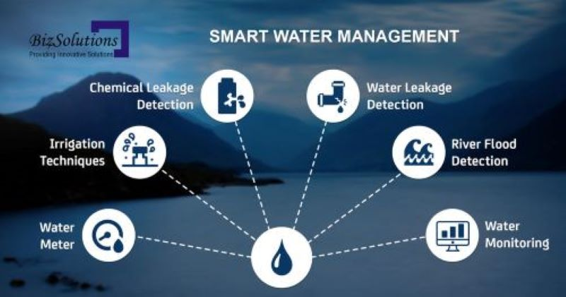

Water covers 70% of our planet. If you think this figure is reassuring and wonder why should we care about such a plentiful resource, then think again. Water scarcity is a growing issue. According to several UN reports, it will directly affect nearly 20% of the human population by 2025. By 2040, roughly 1 in 4 children worldwide will be living in areas of extremely high-water stress. This is not limited to developing countries. Indeed, freshwater—the one we drink, bathe, grow our vegetables with, and cook with—is incredibly rare. Only 3% of the world’s water is fresh water, and two-thirds of that is hidden away in frozen glaciers or unavailable for use. According to several NGO’s, about 1.1 billion people worldwide lack access to water, and a total of 2.7 billion find water scarce for at least one month of the year. Climate change and a growing population are the main reasons for this but they aren’t the only ones: collapsed infrastructure and distribution systems, pollution, conflict, overloaded water systems, and poor management of water resources are just a few of the human factors that are increasingly denying people their right to safe water and sanitation. And when water is scarce, sewage systems can fail and the threat of contracting diseases like cholera, typhoid fever and other water-borne illnesses surges. Ecosystems around the world are suffering. And the price of water becomes more expensive which indirectly influences the countries’ economies.
Let’s take a look at how Smart water Management systems can help addressing the growing lack of available fresh water…
Our mission is to educate individuals and communities about the critical issue of water pollution and empower them to take proactive measures in water management. Through informative content, innovative solutions, and community engagement, we aim to drive positive change in the way we treat and use water.
Smart Water Management is the activity of planning, developing, distributing and managing the use of water resources using an array of IoT technologies which are designed to increase transparency, and make more reasonable and sustainable usage of these water resources.
It applies to multiple sectors: agriculture, farming, industry, services, cities… Monitoring water consumption in houses, checking water levels, checking the quality of drinking water, detecting chemical leakages in rivers around plants, tracking pressure variations along pipes or checking water quality in aquariums are a few examples of the many useful applications.
Microcontrollers and sensors —such as ultrasonic sensors, flow sensors, temperature, salinity, conductivity, humidity, pressure, or luminosity sensors— placed on pipes or pumps measure the water levels, flow, temperature and quality of the water in real time. Message alerts and data generated by the sensors are transmitted over the Internet to a cloud server, where it is processed, analyzed, sometimes with the help of AI, and sent to a terminal for the user to consult. The system can then control and regulate the usage and quality of water resources as well as facilitate the maintenance of the default equipment.
